Operating Documentation
Direction 5133315-3, Rev# 14
Signa EXCITE HD 1.5T Service Methods
Module Version 1.0, Version Date 5/3/07
Operating Documentation |
| Required Persons | Preliminary Reqs | Procedure | Finalization |
|---|---|---|---|
| 1 to 2 - (2 for RRI HO Shim supply w/o Hoist kit) | 3 hours (to obtain Hoist Kit for RRI Supply) | 45 minutes | 20 minutes |
| Item | Qty | Effectivity | Part# | Manufacturer | |
|---|---|---|---|---|---|
| Hoist Kit (for RRI Shim Supply Replacement Only) | 1 | - | 46-317266G6 | - | |
| Screwdriver | 1 | - | - | - | |
| Non Ferrous Tool Kit | 1 | - | - | - | |
| ||||
| Electrocution Hazard, . | ||||
| Dangerous and or Fatal Voltages are present in the energized cabinet. | ||||
| Follow LOTO steps as given in first section of this document to disable and verify safe voltage levels |
Prepare for the shutdown of equipment. Notify affected personnel working in the area that LOTO is being performed.
Press the power switch at the back of the HO Shim Supply
Remove the power cord from the plug it is plugged into
Using DMM, measure voltage at plug to ensure no power present
Lock out the power plug.
Disconnect the HO Shim output cable from equipment and magnet room sides of filter, SeeIllustration 1
Illustration 1: HO Shim Filter Replacement
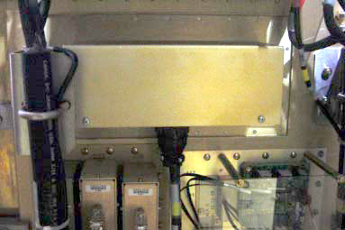
Remove nuts from HO Shim filter (located on magnet room side).
Pull original filter out from equipment room side
Install new filter references steps 1-3.
Proceed to finalization.
| NOTE: | HO Shim Filter Replacement only applies to the RRI supply as the weight requires the Hoist Kit when only 1 FE is present. Illustration X-X is the RRI Supply |
Using the screws included with the anti-tip legs, secure the aluminum anti-tip legs to the threaded holes on each side of the base of the Cabinet. See Illustration 2.
Illustration 2: HO Shim Supply Replacement (RRI Supply Only)
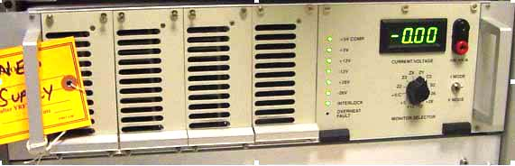
Remove the front cover and the top bracket from the cabinet.
Illustration 3: Installing Anti Tip Legs on Sides of cabinet
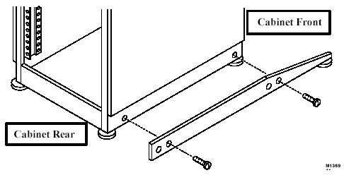
Open the rear cabinet door
Remove the four (4) screws that attach the fan module to the TAC cabinet. Set the fan module in the cabinet.
Locate and open the Universal Lift Hoist Kit.
| NOTE: | The Universal Lift Hoist is assembled from parts stored in the Universal Lift Hoist Kit. |
Locate the three (3) large Steel Rail sections and place them on a flat surface for assembly. See Illustration 3
Arrange the rail sections in the proper order (rear, center, then front) and fasten them together with 4.75” X 1/2” caps crews and hex nuts
Illustration 4: Steel rail sections, Hex Bolts and Nuts
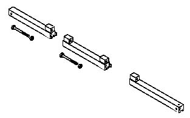
Use the crescent wrenches to tighten the cap screws.
Assemble and fasten the elevating brackets to the rail assembly. See Illustration 5
Illustration 5: Hoist Top rail parts with elevating brackets
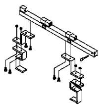
Center the Steel Rail and elevating bracket assembly at the top of TAC Cabinet, so the hoist assembly will face the front of the cabinet. See Illustration 6.
Tighten the bolts on the Steel Rail to secure it to the top of the cabinet.
Illustration 6: Hoist Installed on TAC Cabinet
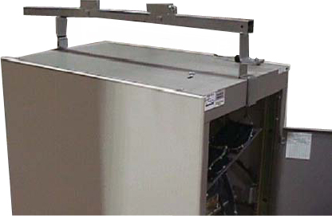
| ||||
| POSSIBLE PERSONNEL INJURY | ||||
| None | ||||
| VERIFY ALL HARDWARE IS SECURELY FASTENED ALL BOLTS AND NUTS MUST BE TIGHT PROIR TO ATTACHING THE ASSEMBLY TO THE LIFT KIT |
Locate the Hoist Assembly in the Lift Kit. See Illustration 7.
Illustration 7: Hoist Assembly
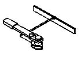
Insert the Hoist Assembly into the open end of the front rail. Insert a locking pin into the holes near the front edge of the front rail. This locking pin prevents the Hoist Assembly from sliding out of the rails. See Illustration 8.
Illustration 8: Placement of hoist assembly into front end of steel rail assembly
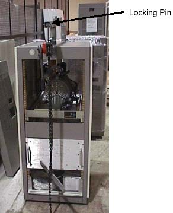
Disconnect all cables that attach to the rear of the shim supply, see Illustration 9.
Illustration 9: Disconnect Cables
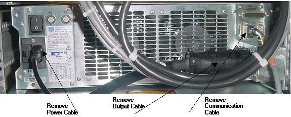
Remove the 4 screws to the front of the resistive shim supply
Slide supply out until the side holes for the Hoist Brackets are exposed. DO NOT SLIDE past the STOP line which is located at the top of the supply.
Attach the hoist side brackets to the resistive shim supply. See Illustration 10
Illustration 10: Hoist side Brackets
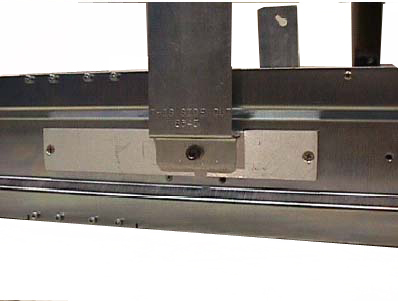
Attach the hoist bar to the side brackets and slide the supply out of the cabinet.
Hoist the resistive shim supply down. See Illustration 11
Illustration 11: Supply Installation
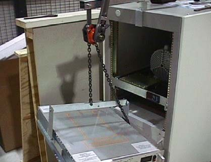
Remove the hoist bracket and side brackets from the resistive shim supply.
Using the above steps as reference, attach the side brackets to the new supply and hoist it up into the cabinet
Install the four (4) bolts that attach the resistive shim supply to the TAC Cabinet.
Attach the cables removed in step 15.
Remove the hoist assembly from front rail.
Loosen the bolts that secure the Steel Rail to the top of the cabinet.
Remove the Steel Rail from the cabinet
Replace the top bracket and front cover for the TAC Cabinet
Replace the fan module and secure with four (4) screws.
Remove the anti-tip legs.
Proceed to Finalization, Step 1
| NOTE: | This section is only for the replacement of the HO Shim Supply (NAV version). This supply is light enough to replace without the use of the Hoist Kit. See Illustration X-X for NAV supply. |
Remove all cables that attach to the back of the supply. See Illustration xx below for details.
Illustration 12: HO Shim Supply Replacement (NAVSupply Only
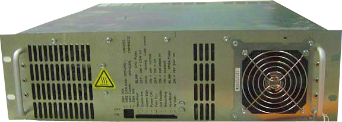
Illustration 13: HO Shim Supply Replacement (NAVSupply Only) _ 2
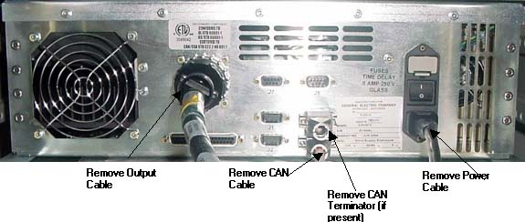
Remove 4 screws that attach the shim supply to the cabinet
Carefully slide out and remove the shim supply.
Install the new supply and secure with 4 screws
Attach all cables/connectors removed in Step 1
Proceed to Finalization, Step 1
Remove LOTO from power cable to shim supply.
Plug in shim supply power cable and turn on power switch at back of supply
Reset TPS
If NAV supply is used, proceed to HO Shim Supply Functional Checks and run shim coil continuity check.
If RRI supply is used, proceed to HO Shim Functional Check and check out at least 1 FOV.
Run a Head or Body scan to make sure system is ok.